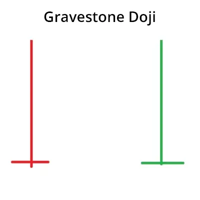

Das Gravestone Doji-Muster ist ein Handelsmuster, das das Ende eines Aufwärtstrends und den
Beginn eines Abwärtstrends auf dem Aktienmarkt signalisiert. Dieses Muster wird mit einem
einzigen Kerzenhalter oder Kerzen gebildet. Es handelt sich um einen Kerzenhalter, der eine
längere Schwanz hat als seinen Eröffnungspreis und die Länge seines Körpers.
Das Gravestone Doji-Muster ist ein starker Indikator für einen Abwärtstrend. Bei Beobachtung
dieses Musters, könnte man auf dem Aktienmarkt mit einer Abwärtstendenz handeln.